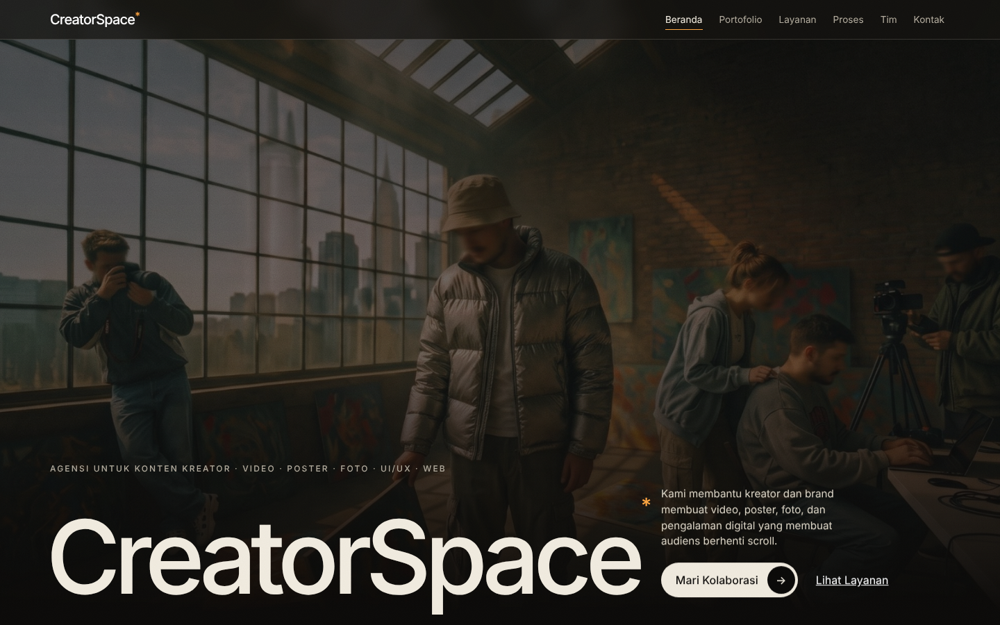

Proses desain UI
Dari wireframe ke website.
Desain akhir website ini mengacu pada wireframe dan mockup di bawah.
- Wireframe
- Mockup
- Implementasi

Pengujian responsif
Halaman detail proyek juga diuji: smartphone · tablet · desktop.


Alur kerja agensi
- Brief & riset
- Konsep & storyboard
- Produksi
- Revisi
- Publish & laporan